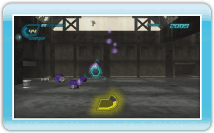
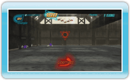

Das Ziel in 530 Eco Shooter ist es, jede Stage mit einer möglichst hohen Punktzahl abzuschließen. Punkte bekommst du für das Abschießen von Dosen. Für Dosen, die du in der Luft triffst, gibt es mehr Punkte als für auf dem Boden liegende. Die Bewegung innerhalb der Stages verläuft automatisch und auf festgelegten Bahnen. Zerstörte Dosen hinterlassen Dosenenergie. Sauge diese Dosenenergie auf, um deine Energieleiste aufzufüllen. Bei feindlichen Treffern verlierst du Energie. Gleichzeitig dient die Energie als Munition für die Recycling-Strahlenkanone. Wenn du keine Energie mehr übrig hast, ist das Spiel zu Ende. Verbleibende Dosenenergie wird am Ende einer Stage in Bonuspunkte umgerechnet und erhöht deine Punktzahl.
Dosenenergie
Die von zerstörten Dosen hinterlassene Dosenenergie kommt in den folgenden Varianten vor:
2 Einheiten Dosenenergie
3 Einheiten Dosenenergie
5 Einheiten Dosenenergie
10 Einheiten Dosenenergie
Je schwieriger eine Dose zu treffen ist, desto mehr Dosenenergie hinterlässt sie für gewöhnlich.
Aufsaugen
Dosenenergie kann mit der Recycling-Strahlenkanone aufgesaugt werden. Halte gedrückt, um den Saugvorgang zu beginnen. Sobald du loslässt, wird die anvisierte Einheit Dosenenergie aufgesaugt und in der Recycling-Strahlenkanone gespeichert. Du kannst auch mit dem Fadenkreuz über mehrere Einheiten Dosenenergie fahren und dann loslassen, um alle auf einmal aufzusaugen.
Die Saugfunktion der Recycling-Strahlenkanone kann allerdings nur eine begrenzte Zeit lang verwendet werden, bevor sie überhitzt. Ist sie überhitzt, musst du warten, bis sie wieder vollständig abgekühlt ist. Verhindere ein Überhitzen, indem du sie zwischendurch kurz abkühlen lässt.

 gedrückt, um den Saugvorgang zu beginnen. Sobald du
gedrückt, um den Saugvorgang zu beginnen. Sobald du